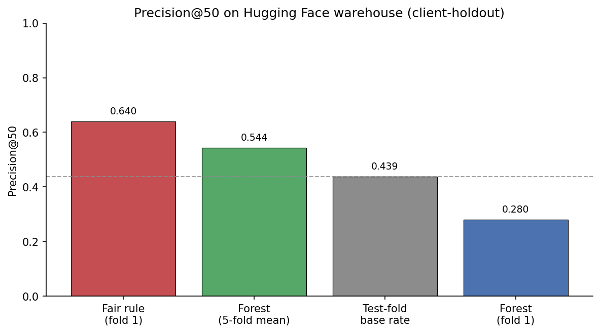
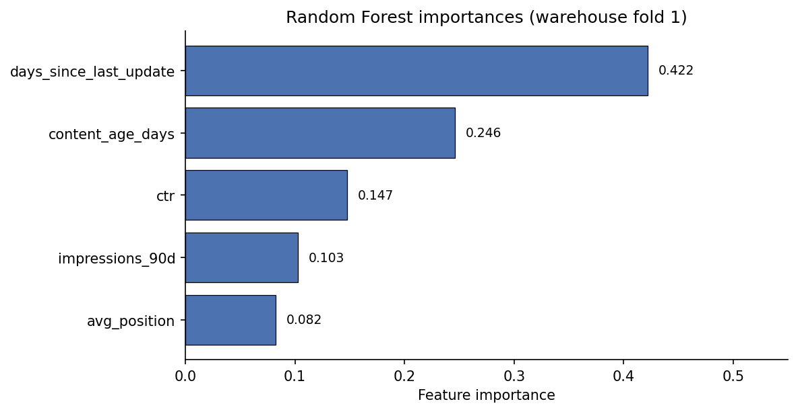
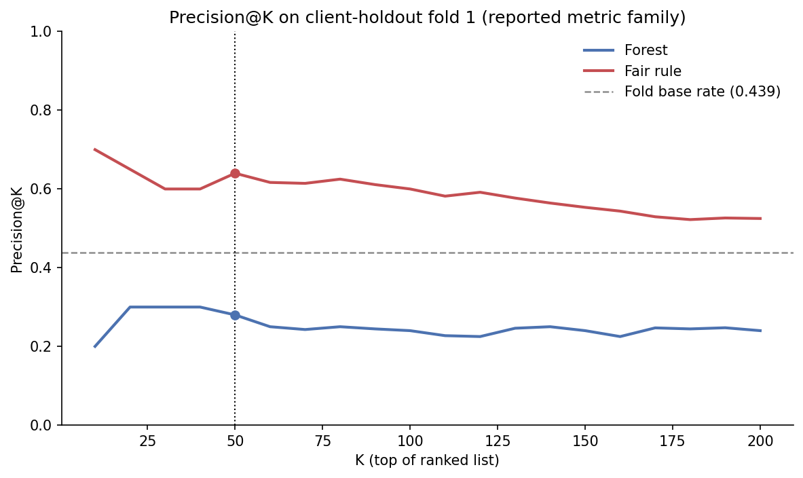

A data-driven approach to help content teams identify which declining pages actually need refresh before wasting editorial time on stable content.
By ilhamilha-creator | 2026
Content teams managing large portfolios struggle to identify which declining pages actually need refresh before wasting editorial time on stable content. This work uses the FlyRank Hugging Face warehouse: 79,576 pages and 26 clients. Features are January–February 2026 search signals. The label is a next-month drop (April impressions below 80% of March).
A fair hand-written rule reaches Precision@50 of 0.640 on client-holdout fold 1. A Random Forest on the same five features reaches 0.280 on that fold (one held-out client) and 0.544 across five folds, near the 0.557 declining rate. The forest does not beat the rule when the label sits in the future.
The output is a ranked action queue with reason codes. This is decision-support for who to look at first, not a causal predictor of ranking improvements.
Which content pages should content editors prioritize for refresh to recover declining search performance?
One unique content page (identified by content_id)
Ranked priority queue with action labels and reason codes. Four labels are defined; on this warehouse run only CONTENT_REFRESH_PRIORITY (18,699 pages) and MONITOR_STABLE (60,877 pages) appeared.
Content editors review flagged pages in priority order, assess whether they actually need refresh, and execute updates on the most promising candidates
Random picking matches the declining rate (0.557). On this warehouse a fair hand-written rule is the stronger shortlist (Precision@50 0.640 on fold 1). The Random Forest did not beat that rule (0.280 on fold 1). The queue is still ranked decision-support with reason codes, not a claim that ML beats a transparent rule.
FlyRank Hugging Face warehouse hf://datasets/FlyRank/internship-warehouse — 79,576 pages, 26 clients after filters. Built with DuckDB over remote Parquet; cached to work/outputs/warehouse_page_frame.parquet.
Features: January–February 2026. Label: April impressions < 80% of March impressions. Features do not overlap the April outcome month.
One row per client_hash_id × content_hash_id
trend_pct: Label-derived feature computed from trend_direction, excluded to prevent leakageclient_id used only for grouped validation splits, never as featurestrend_pct deliberately tested and confirmed leaky (inflates performance by ~15%), excluded from final modelNo client names, URLs, raw queries, or private data appear in any work notebooks or outputs. All work uses anonymized identifiers only.
The baseline combines three simple, transparent rules that any content strategist could implement without ML:
Pages with days_since_last_update >= 180 AND impressions_90d >= 500 are flagged. This identifies old content that still receives traffic.
Pages with avg_position > 10 AND content_age_days >= 180 are flagged. This identifies older pages sitting past page one.
Pages with ctr < 0.05 AND impressions_90d >= 1000 are flagged. This finds visible pages with very low CTR. The score does not use trend_direction or trend_pct.
This baseline represents human intuition about what makes a page "need refresh." It uses the same data split (client-holdout) and the same metric (Precision@50) as the model, ensuring apples-to-apples comparison. The baseline is intentionally simple—if ML can't beat human intuition, the system isn't useful.
Precision@50 = 0.640 (32/50 pages correctly identified as declining) on the same client-holdout test set used for model evaluation. This is the fair rule from w04_baseline_score.ipynb. It does not use the label.
Random Forest classifier with 100 trees and max_depth=8. This fits the Refresh lane because:
Five core features used:
content_age_days: How old the content isdays_since_last_update: How long since last modificationimpressions_90d: Search visibility over 90 daysctr: Click-through rate (engagement quality)avg_position: Average search ranking positiontrend_pct: Label-derived, would leak target informationPositive class = April impressions < 80% of March impressions. Features are January–February 2026, so the label is a next-month drop, not a same-window proxy.
Client-holdout validation using GroupKFold (5 folds). Pages from the same client never appear in both training and test sets, ensuring generalization to unseen clients. This mimics real-world deployment where the model will be applied to new clients.
Grouped by client because different clients have different baseline performance, content strategies, and search visibility patterns. A simple random split would overestimate performance by memorizing client-specific patterns.
Primary metric: Precision@50 (precision in top 50 predicted declining pages). This matches the business use case—content teams will review the top N pages, so we care about precision in that set.
| Method | Precision@50 | Improvement |
|---|---|---|
| Fair hand-written rule | 0.640 | — |
| Random Forest (fold 1) | 0.280 | 0.44× the rule |
| Random Forest (5-fold mean) | 0.544 | near 0.557 declining rate |
| Test-fold base rate | 0.439 | fold 1 only |
Fold 1 Precision@50 of 0.280 means 14 of the top 50 are in the declining class. The fair rule on the same fold is 32/50. That fold is one client (20,793 pages, base rate 0.439). Across five folds the forest mean is 0.544, near the 0.557 declining rate.
On the warehouse the forest leaned on freshness and age more than on impressions. That is a different pattern than the starter CSV, where impressions dominated. Fold-1 Precision@50 is still below the fair rule.
The fair hand-written rule reaches 0.640 Precision@50. The Random Forest reaches 0.280 on the same client-holdout fold (0.44× the rule). Five-fold mean is 0.544. This is a negative result on a future label: the forest does not beat the readable rule. High-impression pages can still dominate a ranked list, so a person has to skip evergreen, seasonal, and already-updated pages.
The model doesn't learn strong signals from some features we expected to matter (like engagement_rate or scroll_rate). This suggests that for this specific task (identifying declining pages), visibility and position matter more than engagement metrics—counterintuitive but valuable insight.



work/outputs/action_playbook_queue.csvConfidence: Medium confidence in the model's predictions for high-visibility pages. Lower confidence for low-visibility pages where data is sparse.
Limits: This is decision-support, not automation. Content teams must manually review before acting. The model identifies patterns but doesn't guarantee refresh outcomes. Performance may degrade over time as content strategies and search algorithms change.
git clone https://github.com/ilhamilha-creator/flyrank-ml-assignments.git
cd flyrank-ml-assignments
pip install pandas numpy scikit-learn matplotlib jupyter
jupyter notebook work/notebooks/
work/notebooks/w01_research_question.ipynbwork/notebooks/w02_ml_task_framing.ipynbwork/notebooks/w03_data_contract.ipynbwork/notebooks/w04_baseline_score.ipynbwork/notebooks/w05_model.ipynbwork/notebooks/w06_validation_audit.ipynbwork/notebooks/w07_action_playbook.ipynbwork/notebooks/capstone.ipynbAll models use random_state=42 for reproducibility. The GroupKFold split uses the same seed to ensure consistent train/test splits across runs.
Python 3.x with pandas, numpy, scikit-learn, matplotlib, jupyter. No special dependencies beyond standard data science stack.
work/outputs/baseline_action_score.csv: Fair-rule ranked queue (Week 4)work/outputs/action_playbook_queue.csv: Model playbook queue (Week 7)work/outputs/action_playbook_baseline_metrics.json: Monitoring baseline metricswork/capstone_report.md: Complete research reportwork/presentation.md: Presentation for ML-12docs/paper/charts/: Paper charts from work/scripts/generate_paper_charts.pyBuilt on the FlyRank Hugging Face internship warehouse from FlyRank. Token access is via HF_TOKEN in .env; the token is never printed. Querying uses DuckDB over hf://datasets/FlyRank/internship-warehouse.
Repository: https://github.com/ilhamilha-creator/flyrank-ml-assignments